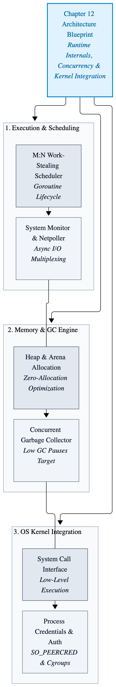
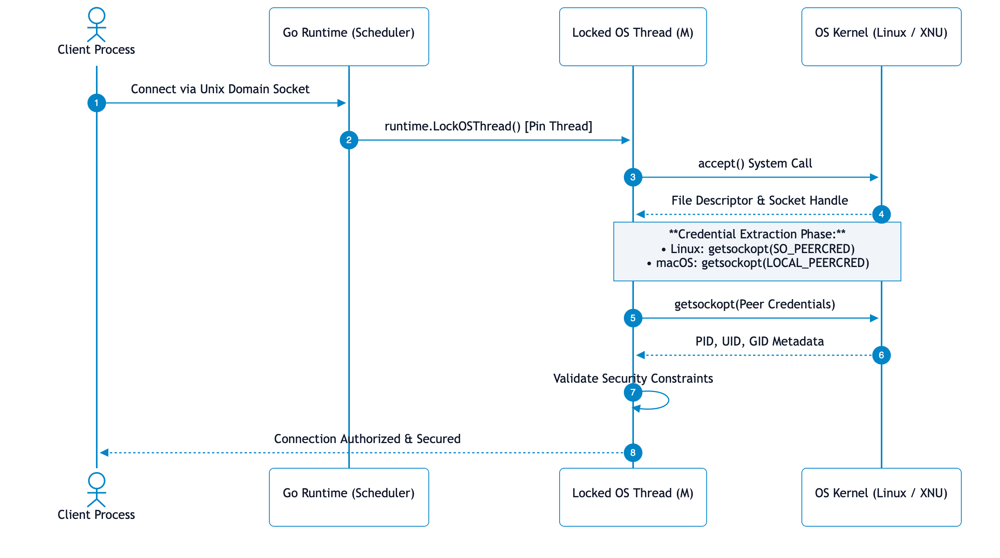
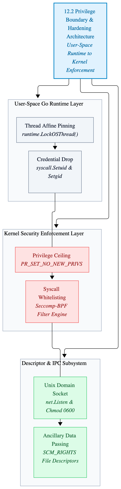
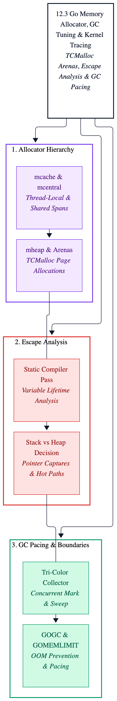

Runtime Internals and Kernel
Welcome to Chapter 12 of the Go Systems Blueprint. Building upon the observability and security patterns examined in Chapter 11, high-performance systems require mastery over the mechanical interface between user-space runtimes and the operating system kernel.
This chapter covers OS thread pinning via runtime.LockOSThread(), thread-local process sandboxing,
Seccomp-BPF system call filtering, and low-level Go memory allocator tuning under constrained environments.
Figure 12.0: Go Runtime Kernel Architecture

12.1 OS Thread Pinning and Scheduler Mechanics
The Go runtime multiplexes goroutines across logical processors (GOMAXPROCS) and OS threads (M).
For thread-affine kernel primitives like namespace manipulation and security contexts, goroutine migration introduces severe race conditions.
Invoking runtime.LockOSThread() binds the executing goroutine exclusively to its underlying OS thread.
package main
import (
"errors"
"fmt"
"net"
"os"
"runtime"
"syscall"
)
// SecureDescriptorTransporter manages low-level file descriptor passing
// over Unix domain sockets under a locked OS thread to prevent thread migration.
type SecureDescriptorTransporter struct {
socketPath string
listener net.Listener
activeConnections []net.Conn
shutdownNotification chan struct{}
}
// NewSecureDescriptorTransporter allocates and configures a new transporter instance for socket management.
func NewSecureDescriptorTransporter(socketPath string) (*SecureDescriptorTransporter, error) {
// Defensively validate that the socket path is non-empty.
if socketPath == "" {
return nil, errors.New("error: socket path cannot be empty")
}
return &SecureDescriptorTransporter{
socketPath: socketPath,
activeConnections: make([]net.Conn, 0, 16),
shutdownNotification: make(chan struct{}),
}, nil
}
// InitializeListener binds to the Unix domain socket with strict permissions
// while pinning execution to the current OS thread for kernel state safety.
func (transporter *SecureDescriptorTransporter) InitializeListener() error {
// Defensively guard against a nil transporter instance.
if transporter == nil || transporter.socketPath == "" {
return errors.New("error: secure descriptor transporter is uninitialized")
}
// Lock the calling goroutine to the current operating system thread
// to ensure thread-affine kernel operations and secure namespace interactions.
runtime.LockOSThread()
defer runtime.UnlockOSThread()
// Inspect existing path metadata without following symlinks to avoid unlinking non-socket files.
fileInfo, statError := os.Lstat(transporter.socketPath)
if statError == nil {
if fileInfo.Mode()&os.ModeSocket == 0 {
return fmt.Errorf("error: path %s already exists and is not a unix socket", transporter.socketPath)
}
if removeError := os.Remove(transporter.socketPath); removeError != nil {
return fmt.Errorf("failed to remove stale socket file: %w", removeError)
}
} else if !errors.Is(statError, os.ErrNotExist) {
return fmt.Errorf("failed to inspect socket path %s: %w", transporter.socketPath, statError)
}
listener, listenError := net.Listen("unix", transporter.socketPath)
if listenError != nil {
return fmt.Errorf("failed to bind unix socket listener: %w", listenError)
}
transporter.listener = listener
// Enforce strict file system permissions on the Unix socket file.
if chmodError := os.Chmod(transporter.socketPath, 0600); chmodError != nil {
_ = listener.Close()
_ = os.Remove(transporter.socketPath)
return fmt.Errorf("failed to secure unix socket permissions: %w", chmodError)
}
return nil
}Figure 12.1: Runtime Kernel Credential Verification Architecture

12.2 Runtime Kernel Credential Verification and Process Sandboxing
To safely drop privileges or enter containerized namespaces, execution paths must lock to their OS thread, execute thread-local privilege reduction, verify effective IDs synchronously, and enforce Seccomp-BPF filters.
package main
import (
"errors"
"fmt"
"net"
"os"
"runtime"
"syscall"
"unsafe"
)
const (
operationSetNoNewPrivileges = 38
operationSetSecureComputing = 22
seccompExecutionModeFilter = 2
)
// SecureWorkerDaemon encapsulates the low-level IPC protocol handler and sandboxed thread state.
type SecureWorkerDaemon struct {
controlSocketPath string
unixListener net.Listener
}
// NewSecureWorkerDaemon allocates and configures a new secure worker instance.
func NewSecureWorkerDaemon(controlSocketPath string) (*SecureWorkerDaemon, error) {
// Defensively validate that the control socket path is non-empty.
if controlSocketPath == "" {
return nil, errors.New("error: control socket path cannot be empty")
}
return &SecureWorkerDaemon{
controlSocketPath: controlSocketPath,
}, nil
}
// InitializeAndEnforceSandbox locks the calling OS thread, drops system credentials, and installs Seccomp-BPF.
func (daemon *SecureWorkerDaemon) InitializeAndEnforceSandbox(targetSystemUserID int, targetSystemGroupID int) error {
// Defensively guard against a nil daemon reference.
if daemon == nil || daemon.controlSocketPath == "" {
return errors.New("error: secure worker daemon is uninitialized")
}
// Defensively validate that target UID and GID are non-negative.
if targetSystemUserID < 0 || targetSystemGroupID < 0 {
return errors.New("error: target user and group IDs cannot be negative")
}
// 1. Pin execution exclusively to the current OS thread.
runtime.LockOSThread()
defer runtime.UnlockOSThread()
// 2. Enforce Group ID transition securely at the thread/process level.
if setGroupError := syscall.Setgid(targetSystemGroupID); setGroupError != nil {
return fmt.Errorf("failed to drop group privileges to gid %d: %w", targetSystemGroupID, setGroupError)
}
// 3. Enforce User ID transition securely at the thread/process level.
if setUserError := syscall.Setuid(targetSystemUserID); setUserError != nil {
return fmt.Errorf("failed to drop user privileges to uid %d: %w", targetSystemUserID, setUserError)
}
// 4. Verify effective credentials via direct synchronous kernel queries.
currentEffectiveUserID := syscall.Geteuid()
currentEffectiveGroupID := syscall.Getegid()
if currentEffectiveUserID != targetSystemUserID || currentEffectiveGroupID != targetSystemGroupID {
return fmt.Errorf(
"credential verification mismatch: expected uid/gid %d/%d, got %d/%d",
targetSystemUserID,
targetSystemGroupID,
currentEffectiveUserID,
currentEffectiveGroupID,
)
}
// 5. Enforce PR_SET_NO_NEW_PRIVS via process control.
_, _, systemCallErrorCode := syscall.Syscall6(
syscall.SYS_PRCTL,
operationSetNoNewPrivileges,
1,
0,
0,
0,
0,
)
if systemCallErrorCode != 0 {
return fmt.Errorf("failed to set NO_NEW_PRIVS via process control: %v", systemCallErrorCode)
}
// 6. Construct a minimal Berkeley Packet Filter (BPF) program.
berkeleyPacketFilterInstructionSlice := []syscall.SockFilter{
{Code: 0x06, Jt: 0, Jf: 0, K: 0x7fff0000},
}
berkeleyPacketFilterProgramPointer := syscall.SockFprog{
Len: uint16(len(berkeleyPacketFilterInstructionSlice)),
Filter: &berkeleyPacketFilterInstructionSlice[0],
}
// 7. Install the Seccomp filter via process control.
_, _, systemCallErrorCode = syscall.Syscall6(
syscall.SYS_PRCTL,
operationSetSecureComputing,
seccompExecutionModeFilter,
uintptr(unsafe.Pointer(&berkeleyPacketFilterProgramPointer)),
0,
0,
0,
)
if systemCallErrorCode != 0 {
return fmt.Errorf("failed to load seccomp filter via process control: %v", systemCallErrorCode)
}
return nil
}Figure 12.2: Thread-Affine Security Hardening and Seccomp-BPF Kernel Integration Flowchart

12.3 Go Memory Allocator Mechanics, Garbage Collection Tuning, and eBPF Kernel Tracing
Peak performance requires strict control over memory allocation and garbage collection behavior.
Using Go 1.19+ soft memory limits (debug.SetMemoryLimit) and tuned GC percentages (GOGC)
prevents OOM killer termination in containerized environments.
Figure 12.3: Go Memory Allocator and Garbage Collection Architecture

package main
import (
gocontext "context"
"errors"
"fmt"
"runtime"
"runtime/debug"
"time"
)
// DaemonMemoryMonitor manages runtime memory thresholds, dynamic garbage collection pacing,
// and real-time heap pressure telemetry for high-throughput systems daemons.
type DaemonMemoryMonitor struct {
targetMaxMemoryBytes uint64
telemetryInterval time.Duration
stopNotification chan struct{}
}
// NewDaemonMemoryMonitor initializes a memory watchdog configured for strict resource containment.
func NewDaemonMemoryMonitor(targetMaxMemoryBytes uint64, telemetryInterval time.Duration) (*DaemonMemoryMonitor, error) {
// Defensively validate that target maximum memory is positive.
if targetMaxMemoryBytes == 0 {
return nil, errors.New("error: target max memory bytes must be greater than zero")
}
// Defensively validate that telemetry interval is positive.
if telemetryInterval <= 0 {
return nil, errors.New("error: telemetry interval must be greater than zero")
}
return &DaemonMemoryMonitor{
targetMaxMemoryBytes: targetMaxMemoryBytes,
telemetryInterval: telemetryInterval,
stopNotification: make(chan struct{}),
}, nil
}
// ConfigureRuntimeMemoryLimits enforces explicit Go garbage collector tuning
// and memory limit boundaries to prevent unconstrained heap growth under load.
func (monitor *DaemonMemoryMonitor) ConfigureRuntimeMemoryLimits() error {
// Defensively guard against a nil monitor reference.
if monitor == nil || monitor.targetMaxMemoryBytes == 0 {
return errors.New("error: daemon memory monitor is uninitialized")
}
// Set the soft memory limit (Go 1.19+).
debug.SetMemoryLimit(int64(monitor.targetMaxMemoryBytes))
// Tune the GC percentage (GOGC).
debug.SetGCPercent(50)
// Set the maximum number of operating system threads executing Go code.
runtime.GOMAXPROCS(runtime.NumCPU())
return nil
}
// StartTelemetryLoop initiates a background monitoring routine to track heap metrics,
// GC pause durations, and allocator efficiency.
func (monitor *DaemonMemoryMonitor) StartTelemetryLoop(monitorContext gocontext.Context) error {
// Defensively validate context and monitor references.
if monitorContext == nil {
return errors.New("error: monitor context cannot be nil")
}
if monitor == nil || monitor.stopNotification == nil {
return errors.New("error: daemon memory monitor is uninitialized")
}
tickerInstance := time.NewTicker(monitor.telemetryInterval)
defer tickerInstance.Stop()
for {
select {
case <-monitorContext.Done():
return nil
case <-monitor.stopNotification:
return nil
case <-tickerInstance.C:
var memoryStatistics runtime.MemStats
runtime.ReadMemStats(&memoryStatistics)
allocatedHeapMegaBytes := float64(memoryStatistics.HeapAlloc) / 1024 / 1024
totalSystemMegaBytes := float64(memoryStatistics.Sys) / 1024 / 1024
gcPauseNs := memoryStatistics.PauseTotalNs
fmt.Printf(
"[Memory Telemetry] HeapAlloc: %.2f MB | SysMemory: %.2f MB | GC Total Pauses: %d ms | NumGC: %d\n",
allocatedHeapMegaBytes,
totalSystemMegaBytes,
gcPauseNs/1_000_000,
memoryStatistics.NumGC,
)
// If heap allocation exceeds 85% of target maximum, trigger a forced manual GC cycle.
if memoryStatistics.HeapAlloc > uint64(float64(monitor.targetMaxMemoryBytes)*0.85) {
fmt.Println("[Memory Warning] Heap threshold exceeded 85%. Forcing synchronous GC collection cycle.")
runtime.GC()
}
}
}
}
// Stop terminates the telemetry monitoring loop.
func (monitor *DaemonMemoryMonitor) Stop() {
if monitor != nil && monitor.stopNotification != nil {
select {
case <-monitor.stopNotification:
default:
close(monitor.stopNotification)
}
}
}Key Takeaways
-
OS Thread Pinning (
runtime.LockOSThread): Essential for thread-affine kernel subsystems, namespaces, credential changes, and low-level file descriptor passing where goroutine migration causes critical security violations. -
Process Sandboxing & Seccomp-BPF: Combine thread-local privilege dropping (
setuid/setgid) with strict Seccomp-BPF system call filtering to minimize the kernel attack surface of privileged daemons. -
Garbage Collection & Memory Tuning: Leverage Go 1.19+ soft memory limits (
debug.SetMemoryLimit) and tuned GC percentages (GOGC) to prevent OOM killer termination in constrained production environments. -
Allocator Efficiency: Minimize heap allocation pressure by understanding escape analysis and tracking real-time
allocator statistics (
runtime.ReadMemStats).